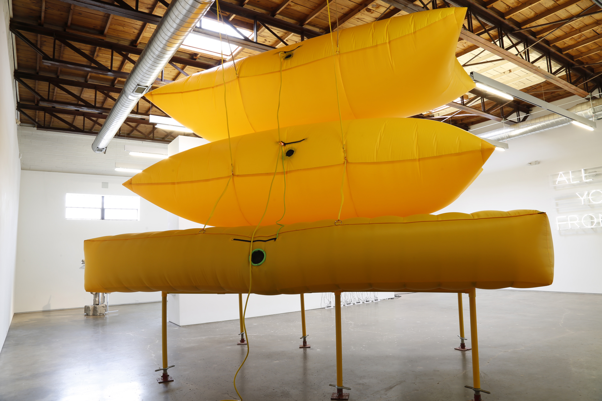
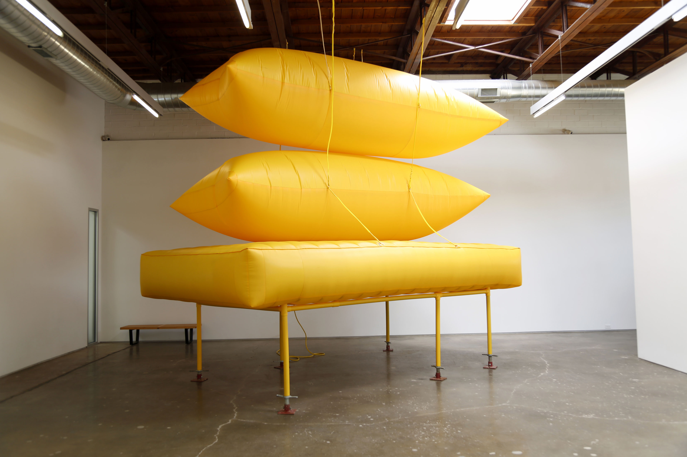

Sentinel
Installation / Sculpture / Video
About the Work
Sentinel is made from off-the-shelf materials; modern materials. It is not bronze, marble, or wood. If the world dies, civilization’s leftovers will mostly be plastics like those composing my forms.
This sculpture is one more product fabricated from the material that dominates object-creation on spaceship earth. To my eyes, mass-produced, element-resistant, multiform plastic emblemizes that transition.
I use inflatables, too. What is an inflatable? It is a thing we launch for temporary operations; an operation usually meant to establish safety. It is part raw element, too: its square footage is mostly air.
It floats.
Such structures suggest rafts, dirigibles, and even living spaces folded into rockets for expansion in space. In my mind, the inflatable suggests egress from the turbulent, resource-churning activity of earthbound life.
The whole thing is also a tower. Notions of hierarchy are inherent in the vertical. A tall structure forces viewers to place their embodiedness in relation to something beyond them.
A tower speaks of achievement, merit, pride, ego, threat, and the promise of security. It recalls guard towers, prisons, forts, and the looming hardware of surveillance culture.
As a tool of concealed observation, a tower suggests shadowy power. The watcher ;“the man in the high tower”; becomes a modern archetype.
He is the spirit of algorithmic intelligences that impel personal and political decisions as our fates steer themselves through online worlds.
I built this thing with AI. This tower came from that world.
This intelligence looks in on itself. I want to evoke that, too.

